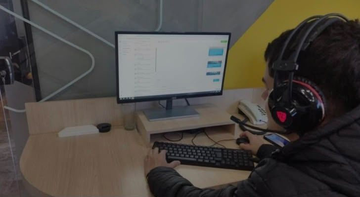
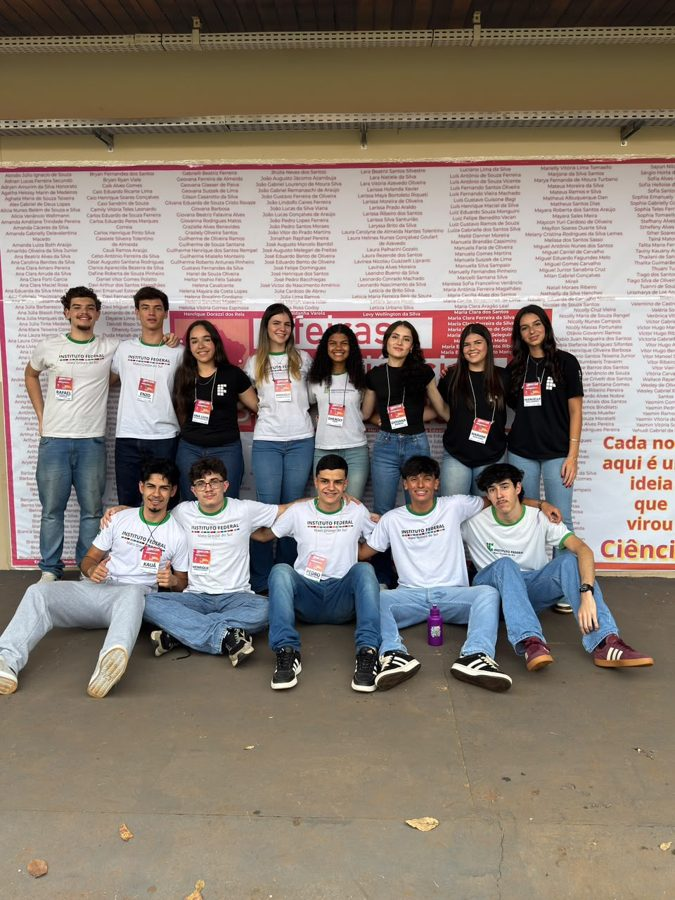

Estágio na Agência W3 Case
Experiência prática de estágio em ambiente profissional de tecnologia.
Aluno da INFO 6B do Instituto Federal de Mato Grosso do Sul
Ver projetos Entrar em contatoSou estudante de Informática e gosto de desenvolvimento web, banco de dados e segurança da informação. Neste portfólio reúno as atividades, projetos e sites que desenvolvi ao longo da minha trajetória acadêmica.

Experiência prática de estágio em ambiente profissional de tecnologia.
Senhas, criptografia com GPG e OpenSSL, SSH, políticas de segurança, assinatura e certificação digital.
Modelagem e consultas em estudo de caso de uma clínica veterinária (veterinário, animal e consulta).
Servidor HTTP nativo, rotas, middlewares e organização de uma API em Express.js.
Consumo de APIs com fetch, useState e useEffect.
PWA, Offline First e App Shell aplicados em uma agenda escolar.
Branches, merges, pull requests, correção de bugs e revisão de código em colaboração.
Números complexos, análise combinatória e fatorial.
Projeto em dupla com Enzo Fuso Paschoalim, usando Express.js, com dados em arrays e migração planejada para MongoDB.
Minha participação: desenvolvimento do back-end e das rotas junto com a equipe.
NodeExpressAPI com rotas /tarefas e exercícios de middlewares, feita em aula no GitHub Codespaces.
Minha participação: projeto individual.
ExpressRESTAplicação web progressiva com funcionamento offline usando App Shell.
Minha participação: projeto individual.
PWAJavaScriptBanco de dados relacional para controle de veterinários, animais e consultas.
Minha participação: modelagem e consultas SQL.
SQL
Participação na feira de ciência e inovação representando o IFMS.
Portal com publicação e listagem de notícias.
Ver códigoAgenda que funciona offline.
Ver códigoO site que você está vendo, feito com HTML, CSS e JavaScript.
Ver código